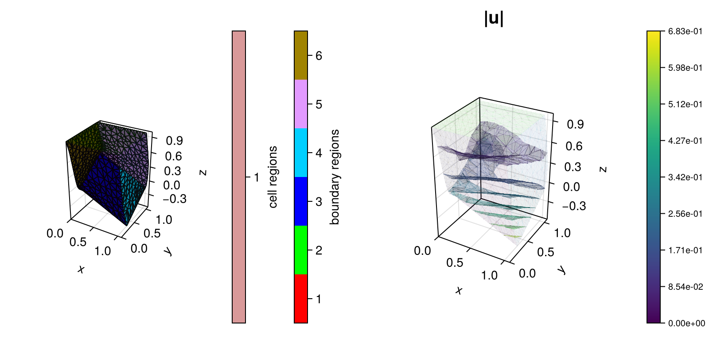

330 : Hyperelasticity
This examples computes the solution of a nonlinear elasticity problem for hyperelastic media via minimisation of the (neo-Hookian) energy functional
\[\begin{aligned} W(u, F(\mathbf{u})) := \int_\Omega \frac{\mu}{2} (F:F - 3 - 2\log(\mathrm{det}(F))) + \frac{\lambda}{2} \log(\mathrm{det}(F))^2 - B \cdot \mathbf{u} \textit{dx} - \int_{\partial \Omega} T \cdot \mathbf{u} \textit{ds} \end{aligned}\]
where $F(\mathbf{u}) := I + \nabla u$ is the deformation gradient and $\mu$ and $\lambda$ are the Lame parameters. The energy is differentiated twice by automatic differentiation to setup a Newton scheme for a Lagrangian finite element approximation of $\mathbf{u}$, once in the code below to define the kernel for the NonlinearOperator and this kernel is differentiated again in the assembly of the Newton scheme for the nonlinear operator.
The deformed unit cube and the displacement for the default parameters and inhomogeneous boundary conditions as defined in the code looks like this:

module Example330_HyperElasticity
using ExtendableFEM
using LinearAlgebra
using DiffResults
using ForwardDiff
using SimplexGridFactory
using TetGen
# inhomogeneous boundary conditions for bregion 1
function bnd_1!(result, qpinfo)
x, y, z = qpinfo.x[1], qpinfo.x[2], qpinfo.x[3]
angle = pi / 3
result[1] = 0.0
result[2] = (0.5 + (y - 0.5) * cos(angle) - (z - 0.5) * sin(angle) - y) / 2.0
return result[3] = (0.5 + (y - 0.5) * sin(angle) + (z - 0.5) * cos(angle) - x) / 2.0
end
# kernel for body and traction forces
function apply_force!(result, qpinfo)
return result .= qpinfo.params[1]
end
# energy functional (only nonlinear part, without exterior forces)
function W!(result, F, qpinfo)
F[1] += 1
F[5] += 1
F[9] += 1
μ, λ = qpinfo.params[1], qpinfo.params[2]
detF = -(F[3] * (F[5] * F[7] - F[4] * F[8]) + F[2] * ((-F[6]) * F[7] + F[4] * F[9]) + F[1] * (F[6] * F[8] - F[5] * F[9]))
result[1] = μ / 2 * (dot(F, F) - 3 - 2 * log(detF)) + λ / 2 * (log(detF))^2
return nothing
end
# derivative of energy functional (by ForwardDiff)
function nonlinkernel_DW!()
Dresult = nothing
cfg = nothing
result_dummy = nothing
W(qpinfo) = (a, b) -> W!(a, b, qpinfo)
return function closure(result, input, qpinfo)
if Dresult === nothing
# first initialization of DResult when type of input = F is known
result_dummy = zeros(eltype(input), 1)
Dresult = DiffResults.JacobianResult(result_dummy, input)
cfg = ForwardDiff.JacobianConfig(W(qpinfo), result_dummy, input, ForwardDiff.Chunk{length(input)}())
end
Dresult = ForwardDiff.vector_mode_jacobian!(Dresult, W(qpinfo), result_dummy, input, cfg)
copyto!(result, DiffResults.jacobian(Dresult))
return nothing
end
end
function main(;
maxvolume = 0.001, # parameter for grid generator
E = 10, # Young modulus
ν = 0.3, # Poisson ratio
order = 3, # finite element order
B = [0, -0.5, 0], # body force
T = [0.1, 0, 0], # traction force
Plotter = nothing,
kwargs...
)
# compute Lame parameters
μ = E / (2 * (1 + ν))
λ = E * ν / ((1 + ν) * (1 - 2 * ν))
# define unknowns
u = Unknown("u"; name = "displacement")
# define problem
PD = ProblemDescription("Hyperelasticity problem")
assign_unknown!(PD, u)
assign_operator!(PD, NonlinearOperator(nonlinkernel_DW!(), [grad(u)]; sparse_jacobians = false, params = [μ, λ]))
assign_operator!(PD, LinearOperator(apply_force!, [id(u)]; params = [B]))
assign_operator!(PD, LinearOperator(apply_force!, [id(u)]; entities = ON_BFACES, store = true, regions = 1:6, params = [T]))
assign_operator!(PD, HomogeneousBoundaryData(u; regions = [2]))
assign_operator!(PD, InterpolateBoundaryData(u, bnd_1!; regions = [1], quadorder = 10))
# grid
xgrid = tetrahedralization_of_cube(maxvolume = maxvolume)
# solve
FES = FESpace{H1P1{3}}(xgrid)
sol = solve(PD, FES; maxiterations = 20)
# displace mesh and plot final result
displace_mesh!(xgrid, sol[u])
plt = plot([grid(u), id(u)], sol; Plotter = Plotter, do_vector_plots = false)
return sol, plt
end
function tetrahedralization_of_cube(; maxvolume = 0.1)
builder = SimplexGridBuilder(; Generator = TetGen)
p1 = point!(builder, 0, 0, 0)
p2 = point!(builder, 1, 0, 0)
p3 = point!(builder, 1, 1, 0)
p4 = point!(builder, 0, 1, 0)
p5 = point!(builder, 0, 0, 1)
p6 = point!(builder, 1, 0, 1)
p7 = point!(builder, 1, 1, 1)
p8 = point!(builder, 0, 1, 1)
facetregion!(builder, 1)
facet!(builder, p1, p2, p3, p4)
facetregion!(builder, 2)
facet!(builder, p5, p6, p7, p8)
facetregion!(builder, 3)
facet!(builder, p1, p2, p6, p5)
facetregion!(builder, 4)
facet!(builder, p2, p3, p7, p6)
facetregion!(builder, 5)
facet!(builder, p3, p4, p8, p7)
facetregion!(builder, 6)
facet!(builder, p4, p1, p5, p8)
return simplexgrid(builder; maxvolume = maxvolume)
end
end # moduleThis page was generated using Literate.jl.